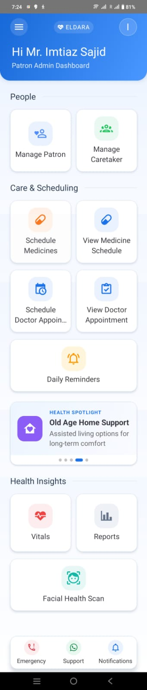
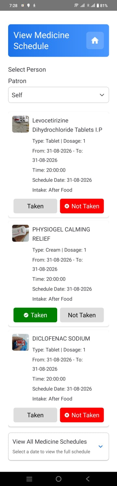
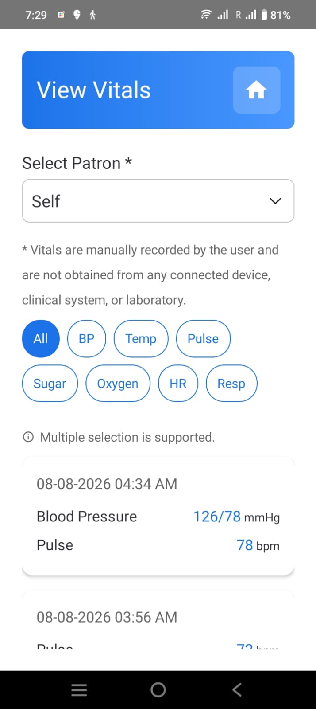
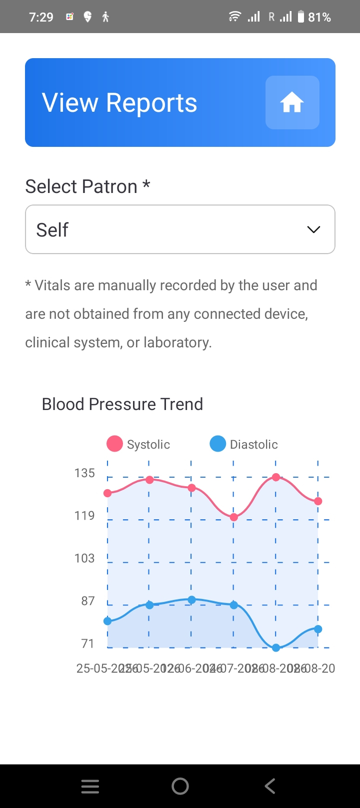
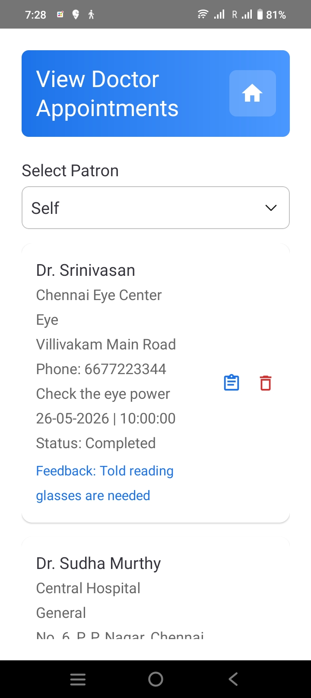
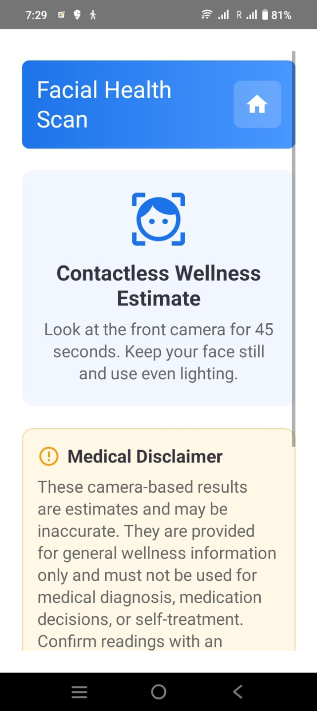

People and care roles
- Manage patrons and caretakers.
- Assign caretaker responsibilities.
- Support family care coordination.
ELDARA is Prochele's elderly care app for India, designed to help families, patrons, and caretakers coordinate everyday care for elderly people, people living with dementia, and adults of all ages.

ELDARA brings care tasks into one mobile experience: people management, medicine scheduling, doctor appointments, daily reminders, vitals, reports, emergency support, notifications, and contactless wellness estimates.
These screens show ELDARA's current care dashboard, medicine scheduling, vitals, reports, appointments, and facial health scan experience.





